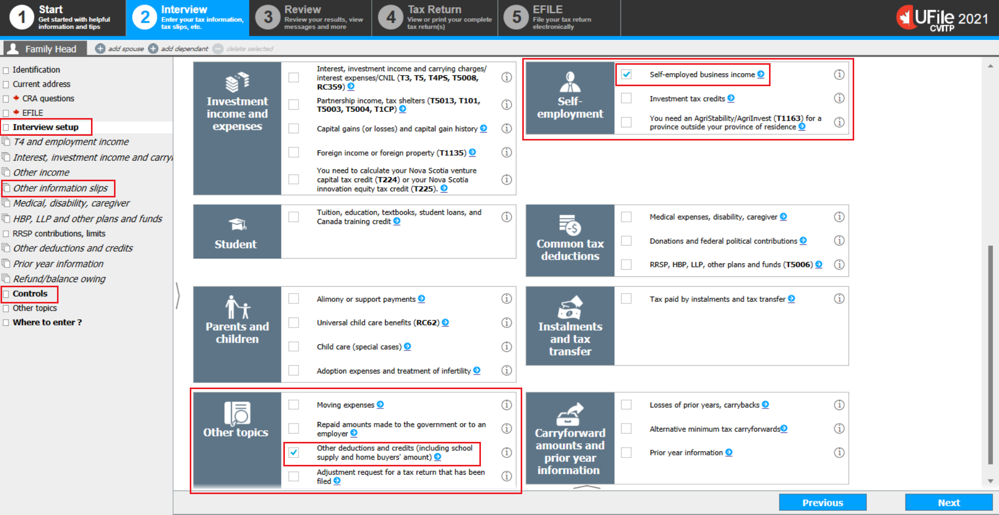
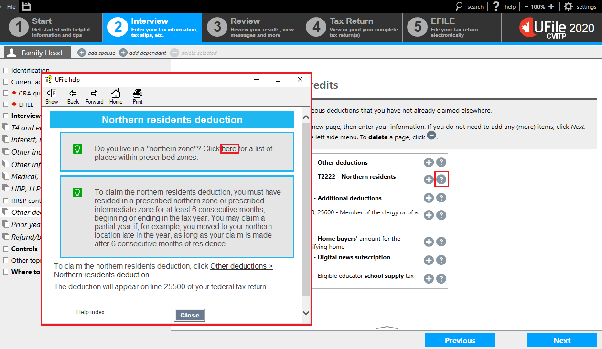
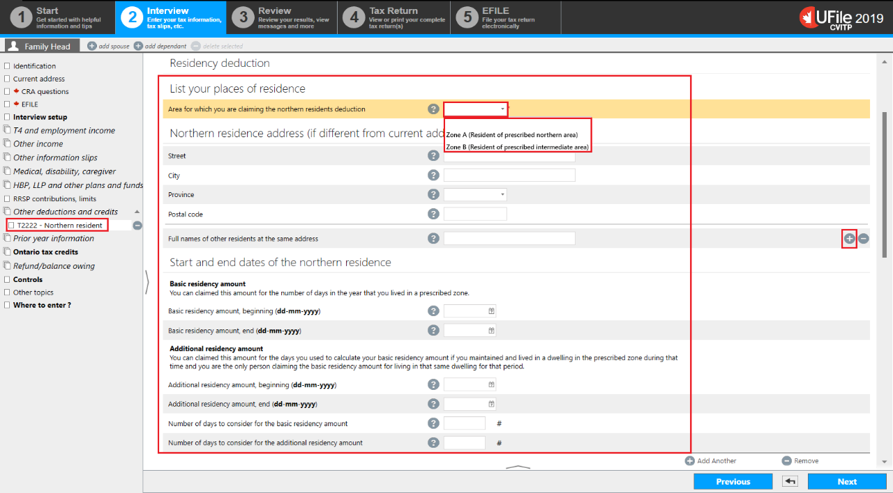
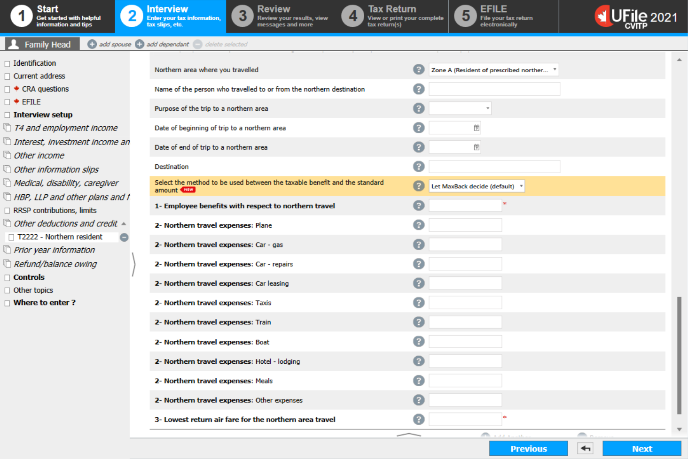
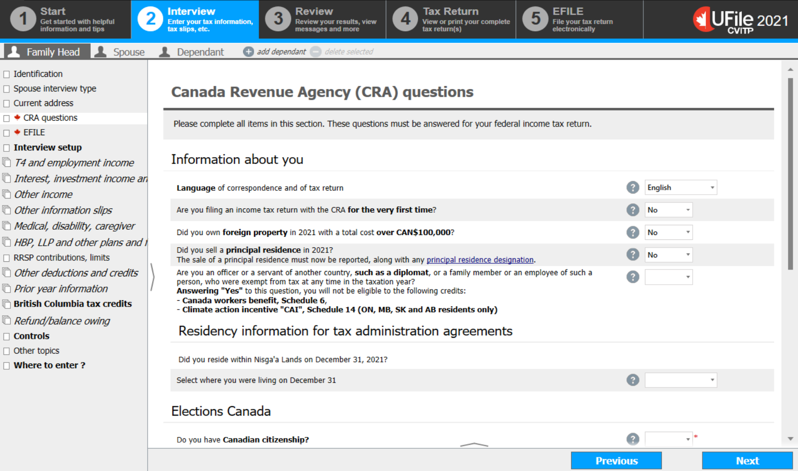

Interview setup
Instructions for Residency information for tax administration agreements (Status Indian)
- select CRA questions from the left side menu
click next step
Instructions for RC210 slip (Canada workers benefit advance payments)
- select Other information slips from the left side menu
click next step
Instructions for self-employment and business income (T2125 – T4A box 48)
- select Interview setup from the left side menu
- from the Self-employment section, check the box next to Self-employed business income and click Next
click next step
Instructions for the northern residents deduction
- select Interview setup from the left side menu
- from the Other topics section, check the box next to Other deductions and credits and click Next
click next step
Instructions to control the claim for Climate action incentive payment(CAIP)
- from the left side menu, select Controls
click next step
Instructions to control the claim(s) for tax credits related to a dependant
- select the dependant’s profile
- from the left side menu, select Controls
click next step
RC210 - Canada workers benefit advance payments received

- click the + sign next to RC210 – Canada workers benefit advance payments statement [Federal line 41500]
click next step
RC210 - Canada workers benefit - advance payments received

- enter the amount from box 10 of the RC210 slip into the corresponding field on this page
- answer the question Is this an amended slip?
- click Next
Self-employment income

- select Self-employment income from the left side menu
- click the + sign next to T2125 – Business income or T2125 – Professional or T2125 – Commission income
click next step
T2125 - Business identification

- complete the Business identification section as follows:
- Business name: enter the individual’s name
- Beginning of fiscal period of business: enter January 1 of the tax year in the format shown
- Fiscal year-end of your business: enter December 31 of the tax year in the format shown
- Select the North American Industry Classification System code (NAICS)
- Products or services and their respective percentages (%) in the total income (mandatory for a Quebec return): enter the type of service that the individual performed to earn the income (for the CVITP, enter 100% for the respective percentage)
The NAICS code is mandatory. However, even if an incorrect code is selected, the return will still be accepted and assessed.
- click Next
click next step
T2125 - Business

- complete the Business income section as follows:
- Fees for services (T4A Box 048): enter the total combined amount from box 048 of all T4A slips
- for Indigenous only:
- Amount of net business income (loss) exempt from tax under section 87 of the Indian Act: enter the tax exempt amount from box 048 of all T4A slips
- Fees for services (T4A Box 048): enter the total combined amount from box 048 of all T4A slips
- to enter the T4A tax slip
click next step
Other deductions and credits

- select Other deductions and credits from the left side menu
Instructions to access a list of places located in a prescribed zone
- from the Other deductions section, click the ? sign next to Federal line 25500 – T2222 – Northern residents deduction
click next step
Instructions to claim the northern residents deduction
- from the Other deductions section, click the plus + sign next to Federal line 25500 – T2222 – Northern residents deduction
click next step
Northern residents – List of prescribed zones
- a help window will open where you can click the link to access the list
- after consulting the list, close the window
click next step
T2222 – Northern residents deduction, Residency deduction
- List your places of residence
- select the area for which the individual is claiming the northern residents deduction, Zone A or Zone B
- enter the northern residence address for which the individual is making a claim, if different from their current address
- enter the Full names of other residents at the same address who lived in the individual’s northern residence during the period claimed for the basic residency deduction
- click on the + sign to the right of Full names of other residents at the same address for each additional person
- Start and end dates of the northern residence
- enter the dates the individual resided in the northern area
- enter the number of days for which the individual claimed both the basic and the additional residency amount
UFile will not calculate the additional residency amount if you do not enter a number under Number of days to consider for the additional residency amount.
click next step
T2222 – Northern residents deduction, Deduction for travel benefits

- scroll down to the field Deduction for travel benefits
- for the Northern area where you travelled question, select the zone where the individual travelled, or where the person they are claiming this deduction for travelled to.
- select only Zone A or Zone B
- once a selection is made, fields for Details of trips are generated on the same screen
click next step
T2222 – Northern residents deduction, Deduction for travel benefits
- enter the name of the person who travelled: last name, comma, first name
- select the purpose of the trip: Medical reasons or Other
- enter the dates of the travel
- enter the destination: you may enter a city name only
- for the question: Select the method to be used between the taxable benefit and the standard amount, select Let MaxBack decide (default) unless this individual is claiming a portion of the standard amount, for themselves or for an eligible family member, while another individual is also claiming a portion of the standard amount for the same person for another trip
- you must enter an amount, even if it is 0, in the following fields:
- Employee benefits with respect to northern travel
- All the northern travel expenses
- Lowest return air fare for the northern area travel, which is the lowest cost quoted for a flight from the airport closest to the individual's residence to the nearest designated city (even if they did not actually travel by air or to that city)
- for each additional trip, click on the + sign next to Add Another, and an additional Details of trips section will open
- if the details of this trip are for someone for whom the standard amount is being claimed (including the individual), and someone else is claiming a portion of the standard amount for the same person for another trip:
- click on the + sign next to Add Another
- select Standard amount claimed by another person
click next step
T2222 – Northern residents deduction, Deduction for travel benefits – Standard amount claimed by another person

- enter the name of the person who travelled: last name, comma, first name
- enter the name of the other individual claiming a portion of the standard amount for this person
- enter the portion of the standard amount the other individual is claiming
- click Next
MaxBack controls

- Schedule 14 – Climate action incentive:
- answer the question Do you wish to claim the Climate action incentive (line 45110)?
Controls for dependant

- change the answers on this page only in cases where the individual informs you they have an arrangement with the other parent (who is not the spouse or common-law partner)
- answer the question Do you wish to claim this dependant as the designated child for the Canada workers benefit on Schedule 6 of the parent’s return? with one of the options:
- Let MaxBack decide
- No
- answer the question How to claim the Canada caregiver amount for infirm children under the age of 18 years of age (line 30500)? with one of the options:
- Let MaxBack decide
- Do not claim
- answer the question Should this person be treated as a dependant by the program? with one of the options:
- Yes (most cases)
- No (rare)
- click Next
Residency information for tax administration agreements
- Residency information for tax administration agreements
- depending on the province you selected in the Identification section, the question and possible answers will vary
- once you read and answer the questions, click Next